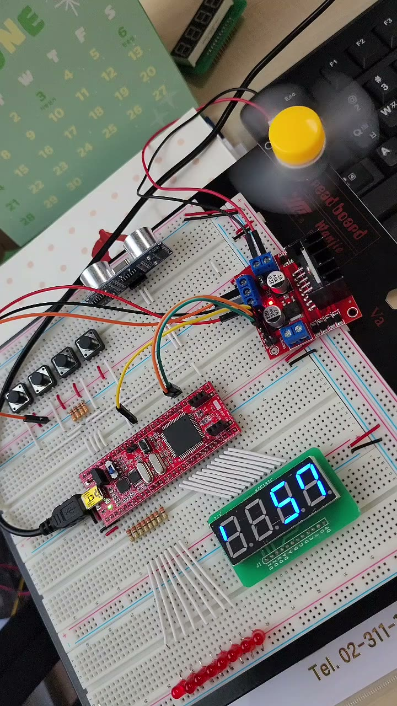

2026.06 · 개인
세탁기 동작 구현
버튼과 타이머로 세탁 → 헹굼 → 탈수 순서를 제어하는 세탁기
1. 프로젝트 개요
- 프로젝트명
- 세탁기 동작 구현
- 수행기간
- 2026.06.18 ~ 2026.06.22
- 수행인원
- 개인
- 담당역할
- 전체
- 사용 기술
- C, ATmega128A, L298N, DC 모터, FND, LED
- 링크
- GitHub
2. 개발 배경 및 목적
- 교육 과정 ATmega128A 개인 과제
- 상태 머신(FSM)과 타이머 인터럽트 기반 순차 제어 학습
3. 개발 목표
- 세탁 → 헹굼 → 탈수 순차 동작
- 버튼 기반 모드 전환 및 시간 설정
- FND·LED 상태 표시
4. 동작 방식 (FSM)
- 대기 / 동작 / 설정 모드를 버튼으로 전환
- 동작 모드에서 세탁 → 헹굼 → 탈수 순으로 남은 시간 1초씩 감소
- 탈수 종료 시 대기 모드 복귀
5. 주요 구현 내용
- Timer0 1ms 인터럽트 기반 시간 계산
- Timer3 PWM으로 모터 속도 제어, 세탁·헹굼 중 10초마다 정·역회전 교대
- FND에 남은 시간과 회전 애니메이션 표시, LED로 현재 단계 표시
- 버튼은 눌렀다 뗀 순간 1회만 인식, 15ms 디바운스
6. 문제 해결
6.1 시작 직후 단계가 바로 넘어감
- 문제
- 동작 시작 직후 세탁·헹굼·탈수가 바로 넘어가며 종료
- 원인 확인
- 남은 시간 변수가 0인 상태로 시작해 매 초 "시간 종료"로 판정
- 해결
- 전원 투입 시와 동작 시작 시 설정 시간을 남은 시간으로 복사
6.2 FND 잔상 및 밝기 저하
- 문제
- FND 숫자가 옆 자리에 겹쳐 보이고 흐리게 표시
- 원인 확인
- 자릿수를 바꾸는 순간 이전 자리 데이터가 남고, 자리별 점등 시간이 너무 짧음
- 해결
- 자릿수 전환 전 출력 초기화, 자리마다 짧은 점등 지연 추가
6.3 모드 증가에 따른 분기 복잡화
- 문제
- 대기 / 세탁 / 헹굼 / 탈수 / 시간 설정 3종을 모드 7개로 나열해, 버튼·FND·LED·모터 코드마다 7개 분기 반복
- 해결
- 대기 / 동작 / 설정 3개 모드로 줄이고, 동작·설정 안의 세탁·헹굼·탈수는 하위 항목으로 분리
- 결과
- 각 모듈의 분기 단순화, 정·역회전 교대 기능을 동작 모드 안에만 추가
7. 결과
- 모드 전환, 단계별 순차 동작, 정·역회전 교대 시연

8. 느낀 점
- 동작을 상태로 나누면 순서 제어와 예외 처리가 단순해진다는 점